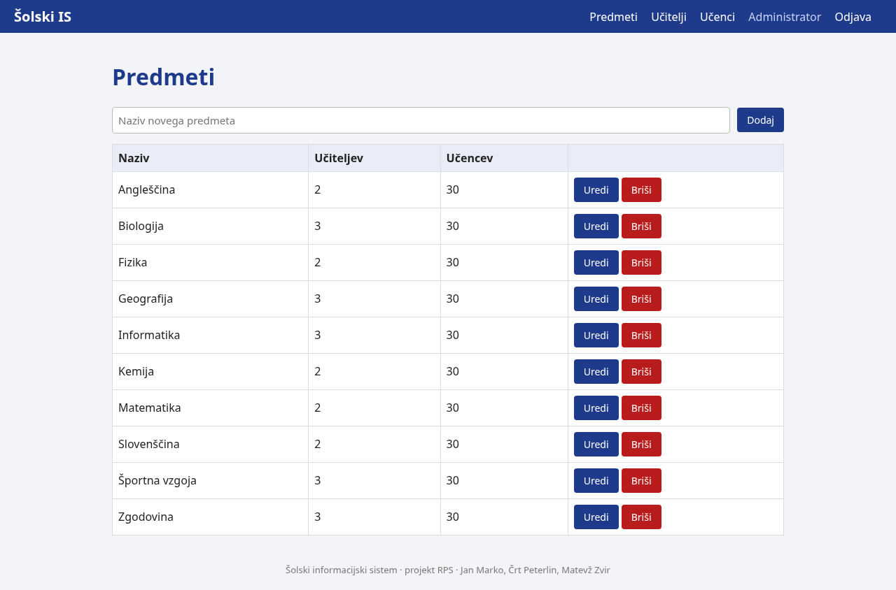
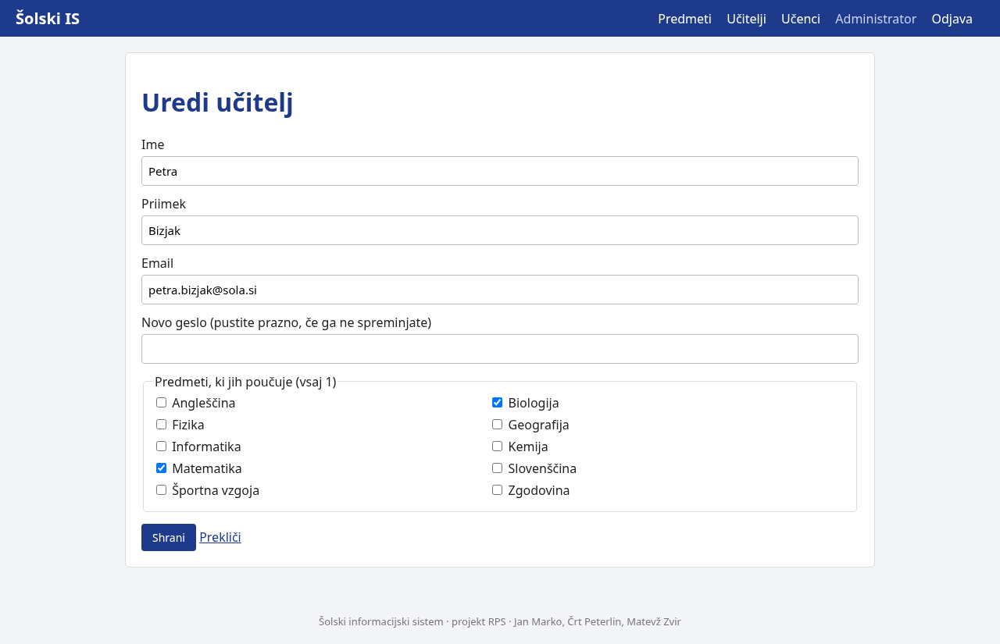
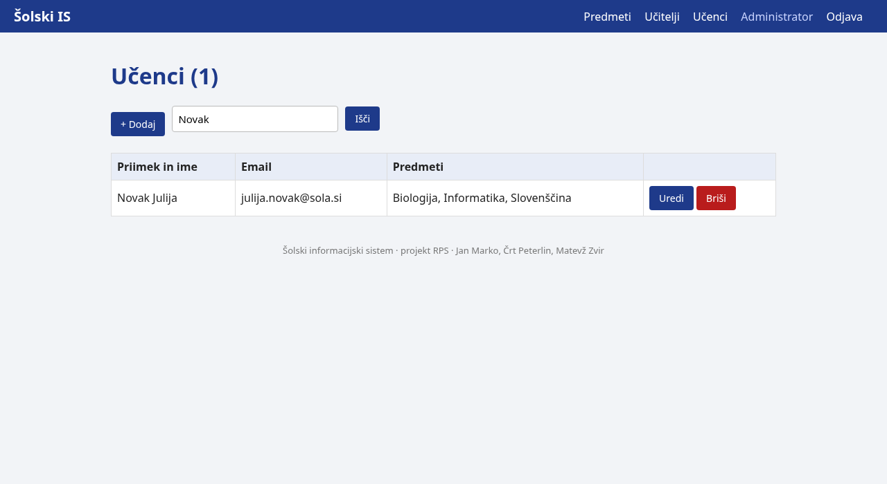

| Predmet: | RPS, Računalniški produkti in storitve |
| Obdobje: | 28. 9. do 4. 10. 2026 |
| Člani: | Jan Marko (vzdrževalec IS), Črt Peterlin (razvijalec), Matevž Zvir (razvijalec) |
| Repozitorij: | https://github.com/janMsc123/sola-is |
| Aplikacija: | https://projekt.pajp.duckdns.org |
develop in v README zapisal pravila za veje in pull requeste. Preveril je obrnjeni posrednik Caddy (HTTPS s potrdilom Let's Encrypt, preusmeritev HTTP na HTTPS) in začel dokumentacijo namestitve dokumentacija/namestitev.md. Pregledal je pull request z administratorskim pogledom.db.js, routes/, views/) in naredil CRUD za predmete, učitelje in učence z izbiro predmetov in iskanjem.db/init/02-testni-podatki.sql ter predloge in style.css za administratorja.| Podatki | Opis |
|---|---|
| 1 administrator | admin@sola.si |
| 10 predmetov | Matematika, Slovenščina, Angleščina, Fizika, Kemija, Biologija, Zgodovina, Geografija, Informatika, Športna vzgoja |
| 20 učiteljev | vsak predmet imata 2 ali 3 učitelja, 5 učiteljev uči po 2 predmeta |
| 100 učencev | vsak obiskuje 3 predmete |
Vsi testni uporabniki imajo geslo geslo123, ki je v bazi shranjeno zgoščeno (bcrypt).
Administrator vnaša, ureja in briše predmete, učitelje in učence. Pri učitelju izbere predmete, ki jih poučuje (vsaj 1), pri učencu predmete, ki jih obiskuje (vsaj 2). Vnosi se preverijo (obvezna polja, unikaten naziv predmeta in email). Brisanje zahteva potrditev.



| Datoteka | Namen |
|---|---|
app/server.js | nastavitve in zagon strežnika |
app/db.js | povezava z bazo, ki jo uporabljajo vse poti |
app/routes/admin.js | poti administratorja |
app/views/ | predloge EJS |
.env | nastavitve in gesla, ločeno od kode |
Caddy sprejme zahteve na vratih 80 in 443 ter jih posreduje aplikaciji na vratih 8097. Potrdilo Let's Encrypt pridobi in obnavlja sam, HTTP preusmeri na HTTPS (koda 308). Postopek je opisan v dokumentacija/namestitev.md.
develop; drug član ga pregleda.develop združimo v main ob koncu tedna, ko vse deluje.| Zahteva | Stanje |
|---|---|
| Vpis, urejanje in brisanje predmetov, učiteljev in učencev | opravljeno |
| Relacije med predmeti, učitelji in učenci vidne v vmesniku | opravljeno |
| Testni podatki (10 predmetov, 20 učiteljev, 100 učencev) | opravljeno |
| Obrnjeni posrednik in HTTPS | opravljeno |
Veja develop in pravila za pull requeste | opravljeno |
| Dokumentacija namestitve | začeta |
Razvijalca bosta naredila prijavo z vlogami, pogled učitelja (gradiva, pregled nalog) in pogled učenca (profil, izbira predmetov, oddaja nalog). Vzdrževalec IS bo uredil pravice za naložene datoteke in pripravil skripto za varnostne kopije baze.